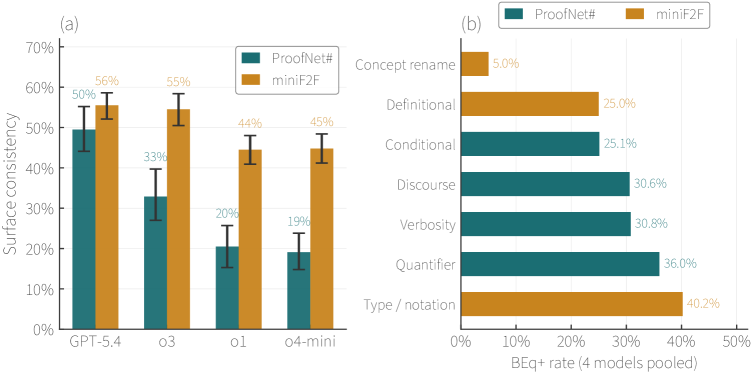
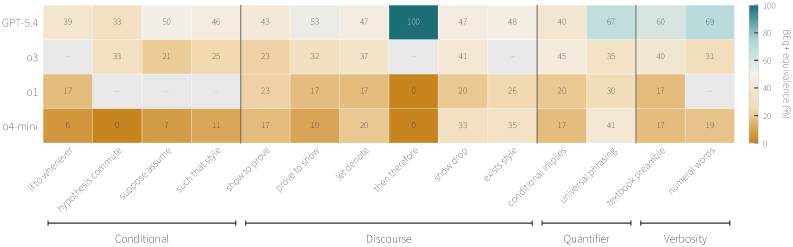

Studies paraphrase-induced failure modes of Lean 4 autoformalizers.
Abstract
Lean 4 autoformalization has become increasingly popular in recent years, with frontier language models and open-weight autoformalizers now producing valid formalizations of mathematical theorems. However, these evaluations often rely on single canonical phrasings of theorems and rarely probe whether outputs are robust to natural variation in inputs, while prior work has shown that semantically equivalent paraphrases often induce divergent formal outputs. We study the structure of these divergences in Lean 4 by applying deterministic paraphrase rules to datasets of undergraduate and Olympiad-level math problems. Across four frontier models and three open-weight autoformalizers, we find that paraphrase sensitivity is dominated by failures at the code-generation layer, and that these failures are typed differently by dataset. Furthermore, these patterns generalize to open-weight models, showing that state-of-the-art autoformalizers still struggle to generate valid Lean code. Our results provide a failure-mode taxonomy for autoformalization and motivate training-time interventions targeted at specific compilation failures.
Problem
Lean 4 autoformalization benchmarks evaluate models on single canonical phrasings of theorems and rarely probe whether outputs are robust to natural variation in inputs. Semantically equivalent paraphrases often induce divergent formal outputs, but the structure of these divergences is poorly understood.
Approach
The authors apply 60 deterministic paraphrase rules across 11 categories to datasets of undergraduate (ProofNet#) and Olympiad-level (miniF2F) math problems. They test four frontier models (GPT-5.4, o3, o1, o4-mini) and three open-weight autoformalizers on the original and paraphrased inputs, then classify all compilation failures by type (unknown identifier, syntax error, elaboration error, other) to build a failure-mode taxonomy for Lean 4 autoformalization.

Figure 1: (a) Per-model surface consistency under paraphrased inputs on ProofNet# (teal) and miniF2F (orange). Pair agreement ranges from 19 – 56\% across the GPT panel. Error bars are 95\% bootstrap CIs. (b) Per-category BEq+ surface consistency, pooled across the GPT panel, with ProofNet# categories (teal) and miniF2F categories (orange) shown together.
Results
Pair agreement (surface consistency) ranges from 19-56% across the GPT panel. Paraphrase sensitivity is dominated by failures at the code-generation layer rather than semantic misunderstanding. Failure types differ by dataset: ProofNet# shows more unknown-identifier errors while miniF2F shows more syntax and elaboration errors. These patterns generalize to open-weight models, indicating that state-of-the-art autoformalizers still struggle to generate valid Lean code under input variation.

Figure 3: Per-(rule, model) BEq+ equivalence on ProofNet# (GPT panel). Rows sorted by panel-mean ascending. Dots denote cells with no paired predictions.
Dataset
Model
N
Base
Pert
Both
PN#
GPT-5.4
299
11.7%
11.4%
9.7%
PN#
o3
237
18.1%
19.0%
14.3%
PN#
o1
249
13.3%
12.0%
8.4%
PN#
o4-mini
324
12.3%
12.0%
6.8%
MF2F
GPT-5.4
827
15.8%
16.1%
14.6%
MF2F
o3
582
23.7%
23.9%
20.6%
MF2F
o1
723
24.2%
24.1%
19.9%
MF2F
o4-mini
658
21.7%
21.6%
16.9%
Compilation success rates across models and datasets